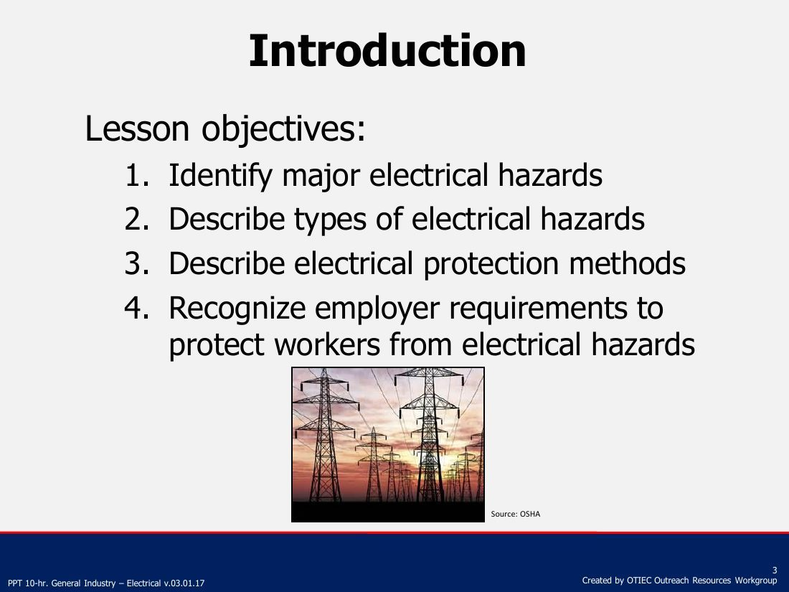
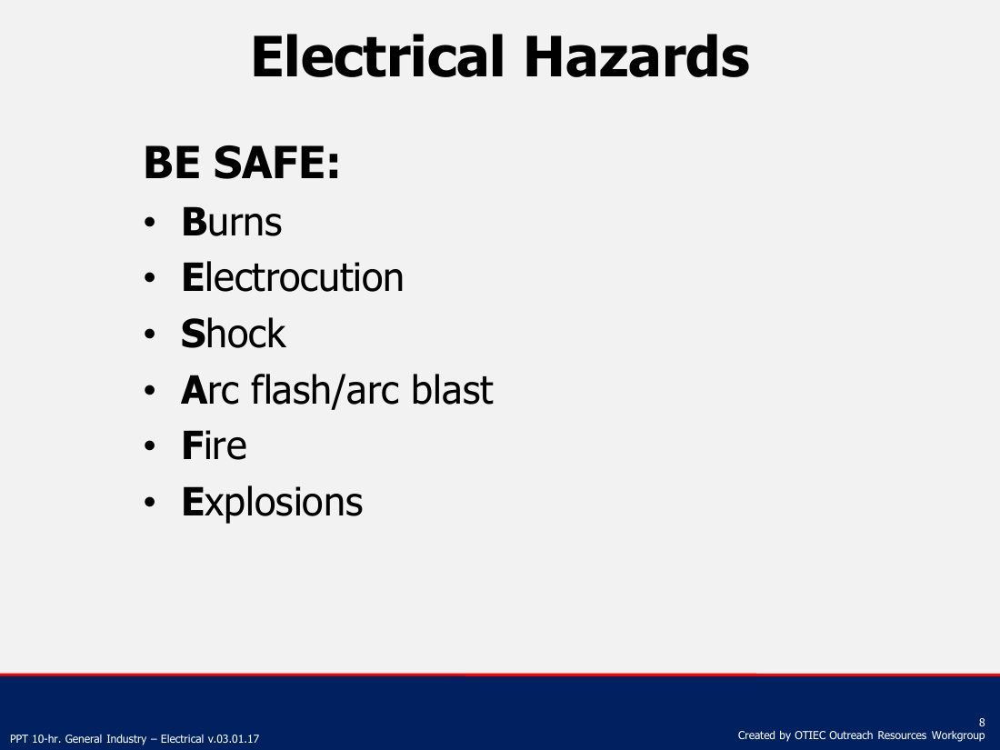
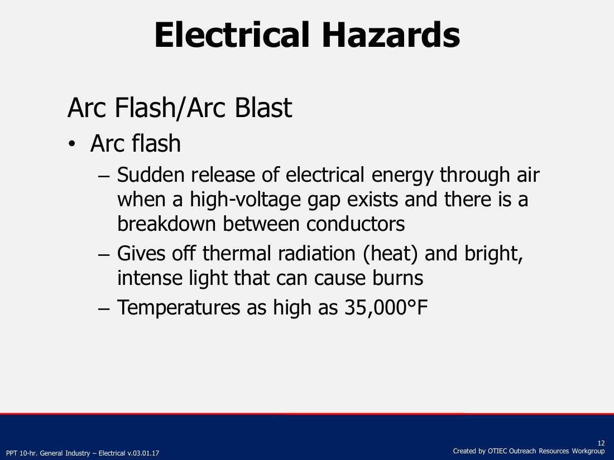
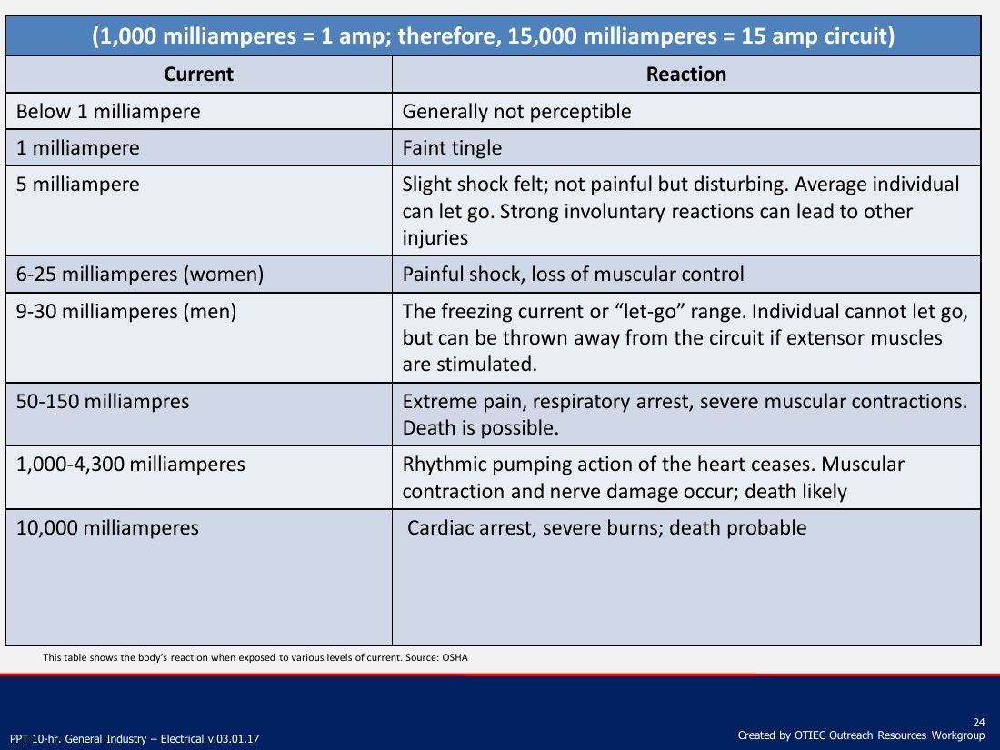
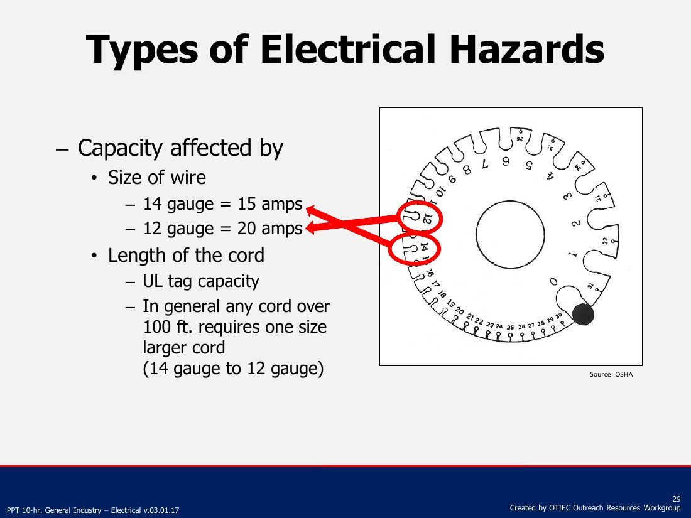
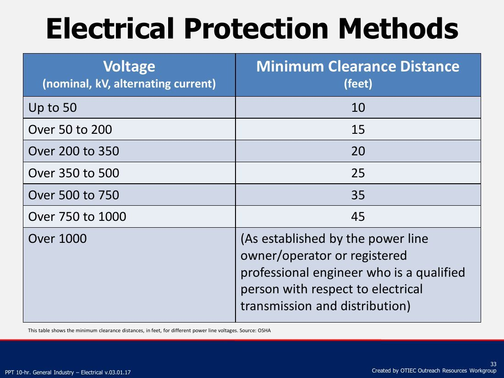
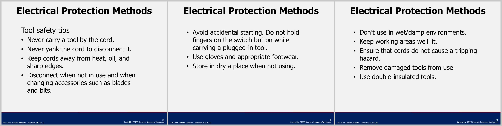
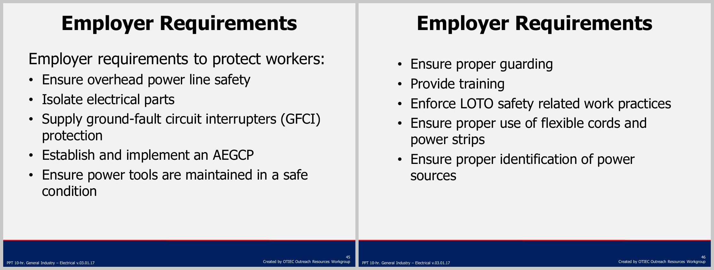
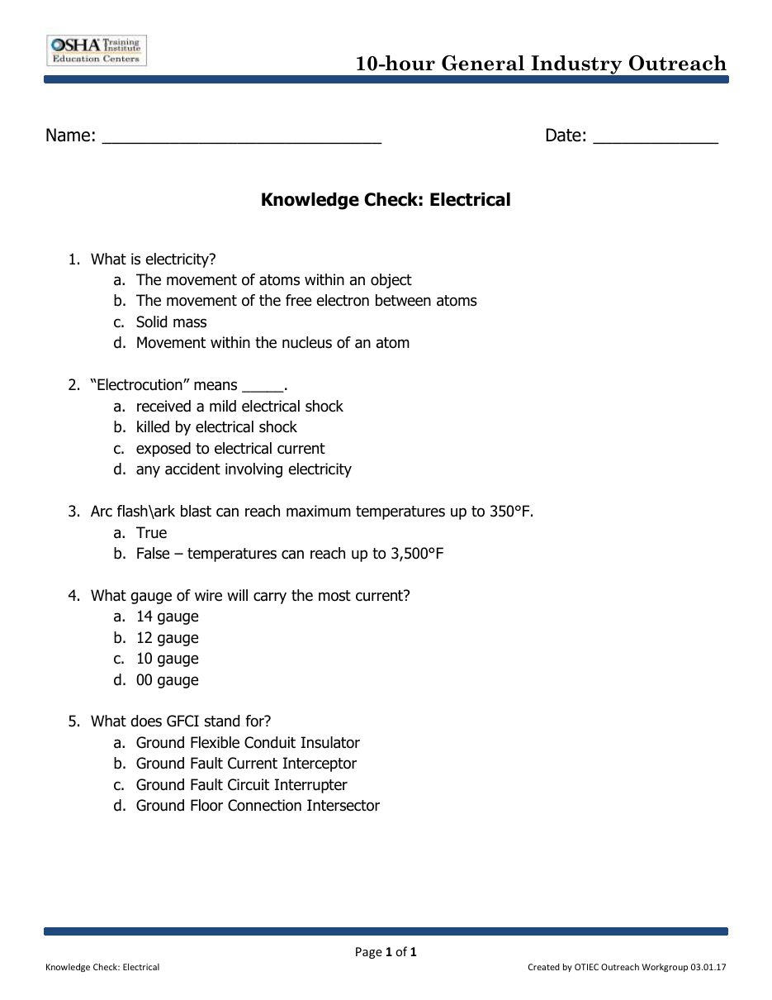
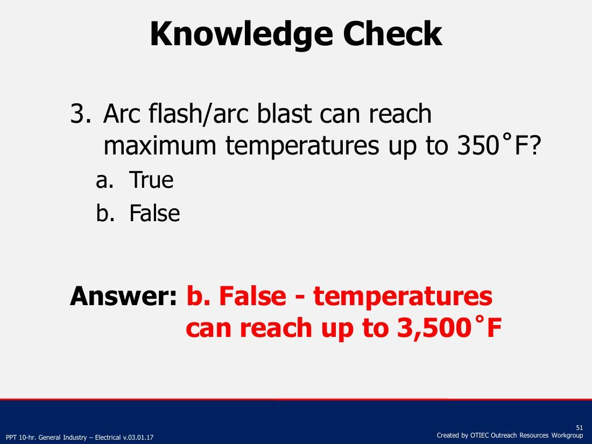

Original content: OSHA Outreach Training Program, Electrical (v.03.01.17), created by the OTIEC Outreach Resources Workgroup, U.S. Department of Labor. This is an independent portfolio redesign by David M. Graham and is not affiliated with or endorsed by OSHA.
David M. Graham · Content Architect & Instructional Designer · Intelligent Heart Productions
The brief
Same facts. Easier to learn from.
The source
A 55-slide trainer deck with a lesson plan, a printed knowledge check and an answer key. Public federal material, built to be presented by an instructor.
The audience
Workers new to electrical hazards, in a classroom with an instructor. Many will never read the lesson plan, so the slides have to carry the learning.
My rules
Keep every fact. Add no new claims. Cut noise, show structure, and make the data visible. Flag anything in the source that doesn't add up.
Scope: I redesigned the eight slides (or slide groups) where design could do the most for the learner, then rebuilt the knowledge check. Use the Next button or the arrow keys to move through.
Electrical makeover · Redesign by David M. Graham · Source content: OSHA / OTIEC Outreach Resources Workgroup
The audit
What was working against the learner
1
Every slide looks the same
Title plus bullets across 55 slides. Nothing signals what matters most.
2
The key data is buried
The shock-current table, the one chart a worker must remember, sits in tiny type.
3
Visual noise
A footer bar repeats the file name on every slide. Photos and clip art come from several sources and styles.
4
Jargon left unexplained
“AEGCP” appears in the employer requirements with no expansion.
5
Answers shown with the question
Each knowledge-check slide prints the answer in red beneath the question, so learners can read it before they think.
6
Old screen shape
4:3 slides, which leave dead space on today’s 16:9 projectors and screens.
Electrical makeover · Redesign by David M. Graham · Source content: OSHA / OTIEC Outreach Resources Workgroup
Before / after · 1 of 8
Objectives that talk to the learner
Cut clutter
Before · original slide 3 of 55

After · click to enlarge
By the end of this lesson
You will be able to…
1Identify the major electrical hazards
2Describe the types of electrical hazards
3Describe electrical protection methods
4Recognize what employers must do to protect workers
ELECTRICAL · OSHA 10-HOUR GENERAL INDUSTRY
Lead with the payoff“You will be able to…” frames objectives as outcomes for the learner.
Numbers do the workLarge numerals and one line each replace the list plus stock photo.
Same wordsThe four objectives keep the source wording.
Electrical makeover · Redesign by David M. Graham · Source content: OSHA / OTIEC Outreach Resources Workgroup
Before / after · 2 of 8
Turning a list into a mnemonic that sticks
Chunk & scan
Before · original slide 8 of 55

After · click to enlarge
Electrical hazards
Remember it: BE SAFE
B
Burns
Most common shock-related injury
E
Electrocution
Fatal: killed by electrical shock
S
Shock
The body becomes part of the circuit
A
Arc flash / blast
Intense heat, light and pressure wave
F
Fire
Most start with “fixed wiring” problems
E
Explosions
Electricity ignites explosive mixtures in the air
Mnemonic made visibleLarge letters turn a bulleted list into something learners can recall.
Six slides in oneThe one-line definition from slides 9–15 sits under each hazard.
ScannableSix equal cards show that all hazards matter equally, as the source says.
Electrical makeover · Redesign by David M. Graham · Source content: OSHA / OTIEC Outreach Resources Workgroup
Before / after · 3 of 8
Making a number feel real
Data visual
Before · original slide 12 of 55

After · click to enlarge
Arc flash / arc blast
Hotter than the surface of the sun
Surface of the sun ≈ 10,000°F
10,000°F
Arc flash: up to 35,000°F
35,000°F
Arc flashA sudden release of electrical energy through the air when a gap exists between conductors. Gives off intense heat and bright light that cause burns.
Arc blastHigh-voltage arcs rapidly heat the air, creating a pressure wave: a blast.
One number, one comparison35,000°F means little alone. Beside the sun’s surface it lands.
Two hazards, two cardsArc flash and arc blast stop competing for space in one bullet list.
FlaggedThis figure conflicts with the source’s own knowledge check. See the source-issues slide.
Electrical makeover · Redesign by David M. Graham · Source content: OSHA / OTIEC Outreach Resources Workgroup
Before / after · 4 of 8
The chart that has to be remembered
Data visual
Before · original slide 24 of 55

After · click to enlarge
How current affects the body
It takes far less than a circuit breaker carries
Below 1 mA
Generally not perceptible
1 mA
Faint tingle
5 mA
Slight shock. You can let go, but the jolt can cause other injuries
6–30 mAwomen 6–25 · men 9–30
“Let-go” range. Painful shock, loss of muscular control; you may not be able to release
50–150 mA
Extreme pain, respiratory arrest, severe muscle contraction. Death is possible
1,000–4,300 mA
Heart’s pumping rhythm stops; nerve damage. Death likely
10,000 mA
Cardiac arrest, severe burns. Death probable
1,000 mA = 1 amp, so a 15-amp circuit can deliver 15,000 mA. Source: OSHA
Colour carries severityGreen to dark red shows the danger rising before a word is read.
Plain-language rowsSame data, same ranges, trimmed to what a worker needs to retain.
Context keptThe 15-amp comparison from the table’s header is now a footnote.
Electrical makeover · Redesign by David M. Graham · Source content: OSHA / OTIEC Outreach Resources Workgroup
Before / after · 5 of 8
A rule of thumb, shown not listed
Data visual
Before · original slide 29 of 55

After · click to enlarge
Extension cords
Thicker wire carries more current
14 gauge
15 amps
12 gauge
20 amps
Cord over 100 ft? Use one size larger (14 gauge → 12 gauge). Check the UL tag for capacity.
Remember: the lower the gauge number, the more current the wire can carry.
Wire thickness drawnTwo bars at true relative thickness make “12 carries more than 14” visible.
Rule pulled outThe 100-ft rule gets its own callout instead of hiding at bullet level four.
Memory hookAdds the “lower number, more current” rule the knowledge check relies on.
Electrical makeover · Redesign by David M. Graham · Source content: OSHA / OTIEC Outreach Resources Workgroup
Before / after · 6 of 8
From a lookup table to a distance you can picture
Data visual
Before · original slide 33 of 55

After · click to enlarge
Overhead power lines
Stay this far away. Minimum clearance
Up to 50 kV
10 ft
Over 50 to 200 kV
15 ft
Over 200 to 350 kV
20 ft
Over 350 to 500 kV
25 ft
Over 500 to 750 kV
35 ft
Over 750 to 1,000 kV
45 ft
Over 1,000 kVDistance set by the line owner/operator or a registered professional engineer who is a qualified person
NOMINAL AC VOLTAGE · SOURCE: OSHA
Distance as lengthBar length shows how clearance grows as voltage rises.
Table fidelityEvery voltage band and every distance is kept.
Edge case explainedThe “over 1,000 kV” row says who sets the distance.
Electrical makeover · Redesign by David M. Graham · Source content: OSHA / OTIEC Outreach Resources Workgroup
Before / after · 7 of 8
Twelve tips on three slides, grouped into two
Consolidate
Before · original slides 39–41 of 55

After · click to enlarge
Portable power tools
Tool safety: do and don’t
Do
Disconnect when not in use and when changing blades or bits
Keep cords away from heat, oil and sharp edges
Use gloves and appropriate footwear
Use double-insulated tools
Keep work areas well lit; keep cords from becoming a trip hazard
Store tools in a dry place
Remove damaged tools from use
Don’t
Carry a tool by the cord
Yank the cord to disconnect it
Hold a finger on the switch while carrying a plugged-in tool
Use tools in wet or damp places
Three slides to oneTwelve tips grouped by the action they ask for: do, or don’t.
Verbs firstEach tip starts with what to do, so it can be applied in the moment.
Never lose a tipAll twelve tips from the source are present.
Electrical makeover · Redesign by David M. Graham · Source content: OSHA / OTIEC Outreach Resources Workgroup
Before / after · 8 of 8
A checklist that explains its own jargon
Consolidate
Before · original slides 45–46 of 55

After · click to enlarge
Employer requirements
Your employer must…
1Ensure overhead power line safety
2Isolate electrical parts
3Supply GFCI protection
4Establish and implement an AEGCPAssured equipment grounding conductor program
5Keep power tools in safe condition
6Ensure proper guarding
7Provide training
8Enforce lockout/tagout work practices
9Ensure proper use of flexible cords and power strips
10Ensure proper identification of power sources
Two slides to oneTen requirements as a numbered checklist.
Jargon decodedAEGCP is expanded where the source leaves it unexplained.
Worker’s-eye wording“Your employer must…” makes the responsibility clear.
Electrical makeover · Redesign by David M. Graham · Source content: OSHA / OTIEC Outreach Resources Workgroup
Quality check
Problems in the source I flagged instead of copying
Arc-flash temperature disagrees with itself
The slides say up to 35,000°F. The knowledge-check slide’s answer says 3,500°F. The printed knowledge check asks whether it reaches 350°F. I used 35,000°F, the commonly cited figure; confirm against OSHA or NFPA 70E before use.
Two different knowledge checks
The printed check and answer key have 5 questions. The slide deck’s check has 7. Questions 6 and 7 exist only on the slides. I rebuilt all seven.
Lesson plan says “construction”
The lesson plan’s terminal objective refers to construction worksite injuries, but this is the General Industry course.
Blank timing fields
Every section of the lesson plan reads “Estimated Time: ?? hours,” so instructors have no pacing guide beyond the one-hour minimum.
Why it matters: copying an error faithfully makes it look more authoritative. Catching it is part of the job.
Electrical makeover · Redesign by David M. Graham · Source content: OSHA / OTIEC Outreach Resources Workgroup
The knowledge check
Before: paper quiz, answers one glance away


No feedback loop
A paper quiz is marked later. A slide shows the answer immediately. Neither tells a learner why.
No chance to think
The answer is on the same slide as the question.
Electrical makeover · Redesign by David M. Graham · Source content: OSHA / OTIEC Outreach Resources Workgroup
Knowledge check · rebuilt as an interactive · part 1 of 4
Answer. Get feedback. Know why.
1. What is electricity?
2. “Electrocution” means…
Electrical makeover · Redesign by David M. Graham · Source content: OSHA / OTIEC Outreach Resources Workgroup
Knowledge check · rebuilt as an interactive · part 2 of 4
Answer. Get feedback. Know why.
3. What is the highest temperature an arc flash can reach?
4. Which gauge of wire will carry the most current?
Electrical makeover · Redesign by David M. Graham · Source content: OSHA / OTIEC Outreach Resources Workgroup
Knowledge check · rebuilt as an interactive · part 3 of 4
Answer. Get feedback. Know why.
5. What does GFCI stand for?
6. Which of these is a safe practice with power tools?
Electrical makeover · Redesign by David M. Graham · Source content: OSHA / OTIEC Outreach Resources Workgroup
Knowledge check · rebuilt as an interactive · part 4 of 4
Last question
7. Who is responsible for making sure overhead power lines are de-energized?
Your score
0 of 7 answered
Scored on first tries. A wrong answer shows why it is wrong and lets you try again.
Design notes: feedback is written per answer, so every wrong choice teaches something. Distractors are the source’s own wrong options. Nothing is shown until the learner commits.
Electrical makeover · Redesign by David M. Graham · Source content: OSHA / OTIEC Outreach Resources Workgroup
How I worked
From a 55-slide dump to a learner-first deck
1
Audit
Read the deck, lesson plan, quiz and key together. Logged every conflict.
2
Prioritize
Picked slides where design could change comprehension: data, mnemonics, long lists.
3
Design system
One type scale, one colour logic (amber for emphasis, red only for danger), one grid.
4
Redesign
Kept every fact. Merged where the source split ideas across slides.
5
Rebuild the assessment
Per-answer feedback, first-try scoring, answers hidden until chosen.